Week 2
Features, Projections & Measures
Simple Features
Todays Data: Colorado Counties!
#> Simple feature collection with 64 features and 4 fields
#> Geometry type: MULTIPOLYGON
#> Dimension: XY
#> Bounding box: xmin: -109.0602 ymin: 36.99246 xmax: -102.0415 ymax: 41.00342
#> Geodetic CRS: WGS 84
#> First 10 features:
#> geoid name aland state_nm geometry
#> 1 08001 Adams 3021840487 Colorado MULTIPOLYGON (((-105.0532 3...
#> 2 08003 Alamosa 1871643028 Colorado MULTIPOLYGON (((-105.4855 3...
#> 3 08005 Arapahoe 2066438714 Colorado MULTIPOLYGON (((-103.7065 3...
#> 4 08007 Archuleta 3496712164 Colorado MULTIPOLYGON (((-107.1287 3...
#> 5 08009 Baca 6617400567 Colorado MULTIPOLYGON (((-102.0416 3...
#> 6 08011 Bent 3918255148 Colorado MULTIPOLYGON (((-102.7476 3...
#> 7 08013 Boulder 1881325109 Colorado MULTIPOLYGON (((-105.3978 3...
#> 8 08014 Broomfield 85386685 Colorado MULTIPOLYGON (((-105.1092 3...
#> 9 08015 Chaffee 2624715692 Colorado MULTIPOLYGON (((-105.9698 3...
#> 10 08017 Cheyenne 4605713960 Colorado MULTIPOLYGON (((-103.1729 3...Simple Features
Simple feature geometries describe the geometries of
features.The main application of simple feature geometries is to describe 2D geometries as
points,lines, orpolygons.“simple” refers to the fact that line or polygon geometries are represented by set of points connected with straight lines.
Simple features access is a standard (Herring 2011, Herring (2010), ISO (2004)) for describing simple feature geometries via:
a class hierarchy
a set of operations
binary and text encodings
Simple Features Access
Simple features or simple feature access refers to the formal standard (ISO 19125-1:2004) describing how objects in the real world can be represented in computers, with emphasis on the spatial geometry of these objects.
It also describes how objects can be stored in and retrieved from databases, and which geometrical operations should/can be defined for them.
The standard is widely implemented in spatial databases (such as PostGIS), commercial GIS (e.g., ESRI ArcGIS) and forms the vector data basis for libraries such as GDAL.
A subset of simple features (e.g. the big 7) forms the GeoJSON specification.
R has well-supported classes for storing spatial data (sp) and interfacing to the above mentioned environments (rgdal, rgeos), but has so far lacked a complete implementation of simple features, making conversions at times convoluted, inefficient or incomplete.
So what is a feature?
A feature is a thing (object) in the real world, such as a building or a river
They often consist of other objects.
A river system can be a feature, a river can be a feature, a river outlet can be a feature.
A image pixel can be a feature, and the image can be a feature…
Spatial Features
The standard says: “A simple feature is defined by the OpenGIS Abstract specification to have both spatial and non-spatial attributes. Spatial attributes are geometry valued, and simple features are based on 2D geometry with linear interpolation between vertices.” - standard.
Spatial Features have a geometry describing where the feature is located and how it is represented.
The geometry of a river can be its watershed, of its mainstem, or the point it drains to (see the OGC HY_Feature standard)
Features can have attributes describing other properties of the feature
. . .
str(co$geometry)
#> sfc_MULTIPOLYGON of length 64; first list element: List of 1
#> $ :List of 1
#> ..$ : num [1:132, 1:2] -105 -105 -105 -105 -105 ...
#> - attr(*, "class")= chr [1:3] "XY" "MULTIPOLYGON" "sfg"- Other properties may include its length, slope, stream order or average flowrate
Geometry types
The following 7 simple feature types are the most common, and are the only ones used for GeoJSON:
| SINGLE | Description |
|---|---|
POINT |
zero-dimensional geometry containing a single point |
LINESTRING |
sequence of points connected by straight, non-self intersecting line pieces; one-dimensional geometry |
POLYGON |
geometry with a positive area (two-dimensional); sequence of points form a closed, non-self intersecting ring; the first ring denotes the exterior ring, zero or more subsequent rings denote holes in this exterior ring |
| MULTI (same typed) | Description |
|---|---|
MULTIPOINT |
set of points; a MULTIPOINT is simple if no two Points in the MULTIPOINT are equal |
MULTILINESTRING |
set of linestrings |
MULTIPOLYGON |
set of polygons |
| Multi-Typed | Description |
|---|---|
GEOMETRYCOLLECTION |
set of geometries of any type except GEOMETRYCOLLECTION |
- The descriptions above were copied from the PostGIS manual.
The remaining geometries 10 are rarer, but increasingly find implementations:
| type | description |
|---|---|
CIRCULARSTRING |
The CIRCULARSTRING is the basic curve type, similar to a LINESTRING in the linear world. A single segment requires three points, the start and end points (first and third) and any other point on the arc. The exception to this is for a closed circle, where the start and end points are the same. In this case the second point MUST be the center of the arc, i.e., the opposite side of the circle. To chain arcs together, the last point of the previous arc becomes the first point of the next arc, just like in LINESTRING. This means that a valid circular string must have an odd number of points greater than 1. |
COMPOUNDCURVE |
A compound curve is a single, continuous curve that has both curved (circular) segments and linear segments. That means that in addition to having well-formed components, the end point of every component (except the last) must be coincident with the start point of the following component. |
CURVEPOLYGON |
Example compound curve in a curve polygon: CURVEPOLYGON(COMPOUNDCURVE(CIRCULARSTRING(0 0,2 0, 2 1, 2 3, 4 3),(4 3, 4 5, 1 4, 0 0)), CIRCULARSTRING(1.7 1, 1.4 0.4, 1.6 0.4, 1.6 0.5, 1.7 1) ) |
MULTICURVE |
A MultiCurve is a 1-dimensional GeometryCollection whose elements are Curves, it can include linear strings, circular strings or compound strings. |
MULTISURFACE |
A MultiSurface is a 2-dimensional GeometryCollection whose elements are Surfaces, all using coordinates from the same coordinate reference system. |
CURVE |
A Curve is a 1-dimensional geometric object usually stored as a sequence of Points, with the subtype of Curve specifying the form of the interpolation between Points |
SURFACE |
A Surface is a 2-dimensional geometric object |
POLYHEDRALSURFACE |
A PolyhedralSurface is a contiguous collection of polygons, which share common boundary segments |
TIN |
A TIN (triangulated irregular network) is a PolyhedralSurface consisting only of Triangle patches. |
TRIANGLE |
A Triangle is a polygon with 3 distinct, non-collinear vertices and no interior boundary |
Dimensions
All geometries are composed of points
Points are defined by coordinates in a 2-, 3- or 4-D space.
In addition to XY coordinates, there are two optional dimensions:
a Z coordinate, denoting altitude
an M coordinate (rarely used), denoting some measure
The
Mdescribes a property of the vertex that is independent of the feature.It sounds attractive to encode a time as M, however these quickly become invalid once the path self-intersects.
Both Z and M are found relatively rarely, and software support to do something useful with them is rarer still.
Valid geometries
Valid geometries obey the following properties:
LINESTRINGSshall not self-intersectPOLYGONrings shall be closed (last point = first point)POLYGONholes (inner rings) shall be inside their exterior ringPOLYGONinner rings shall maximally touch the exterior ring in single points, not over a linePOLYGONrings shall not repeat their own path
If any of the above is not the case, the geometry is not valid.
Non-simple and non-valid geometries
st_is_simpleandst_is_validprovide methods to help detect non-simple and non-valid geometries:An example of a non-simple geometries is a self-intersecting lines
An example of a non-valid geometry are would be a polygon with slivers or self-intersections.
(x1 <- st_linestring(cbind(c(0,1,0,1),c(0,1,1,0))))
#> LINESTRING (0 0, 1 1, 0 1, 1 0)
st_is_simple(x1)
#> [1] FALSE
(x2 <- st_polygon(list(cbind(c(0,1,1,1,0,0),c(0,0,1,0.6,1,0)))))
#> POLYGON ((0 0, 1 0, 1 1, 1 0.6, 0 1, 0 0))
(x3 <- st_polygon(list(cbind(c(0,1,0,1,0),c(0,1,1,0,0)))))
#> POLYGON ((0 0, 1 1, 0 1, 1 0, 0 0))
st_is_valid(c(x2,x3))
#> [1] FALSE
Empty Geometries
An important concept in the feature geometry framework is the
emptygeometry.emptygeometries serve similar purposes as NA values in vectors (placeholder)Empty geometries arise naturally from geometrical operations, for instance:
. . .
(e = st_intersection(st_point(c(0,0)), st_point(c(1,1))))
#> GEOMETRYCOLLECTION EMPTYIt is not entirely clear what the benefit is of having
typedempty geometries, but according to the simple feature standard they are type so thesfpackage abides by that.Empty geometries can be detected by:
. . .
st_is_empty(e)
#> [1] TRUESo:
- There are 17 typed geometries supported by the simple feature standard
- All geometries are made up of points
- points can exist in 2,3,4 Dinimsonal space
LINESTRINGandPOLYGONgeometries have rules that define validity- Geometries can be empty (but are still typed)
Well-known Text, Well-known Binary
WKT and WKB
The simple feature standard includes two encodings: Well-known text (WKT) & well-known binary (WKB)
Well Known Textis human-readable:
. . .
x <- st_linestring(matrix(10:1,5))
st_as_text(x)
#> [1] "LINESTRING (10 5, 9 4, 8 3, 7 2, 6 1)"In this example, the word
LINESTRINGprovides the geometry type which is followed by a parentheses, inside the parentheses are thepointsthat make up the geometry.Separate points are separated by a “comma”, while the point coordinates are separated by a “space.”
Coordinates are usually floating point numbers, and moving large amounts of information as text is slow and imprecise.
- For that reason, we use well-known binary (WKB) encoding
. . .
x
#> LINESTRING (10 5, 9 4, 8 3, 7 2, 6 1)
st_as_binary(x)
#> [1] 01 02 00 00 00 05 00 00 00 00 00 00 00 00 00 24 40 00 00 00 00 00 00 14 40
#> [26] 00 00 00 00 00 00 22 40 00 00 00 00 00 00 10 40 00 00 00 00 00 00 20 40 00
#> [51] 00 00 00 00 00 08 40 00 00 00 00 00 00 1c 40 00 00 00 00 00 00 00 40 00 00
#> [76] 00 00 00 00 18 40 00 00 00 00 00 00 f0 3fBinary conversion is used to communicate geometries to external libraries (GDAL, GEOS, liblwgeom) and spatial databases because it is fast and lossless.
WKT and WKB can both be transformed back into R native objects by
. . .
st_as_sfc("LINESTRING(10 5, 9 4, 8 3, 7 2, 6 1)")[[1]]
#> LINESTRING (10 5, 9 4, 8 3, 7 2, 6 1)
st_as_sfc(structure(list(st_as_binary(x)), class = "WKB"))[[1]]
#> LINESTRING (10 5, 9 4, 8 3, 7 2, 6 1)- Conversion between R native objects and WKB is done by package
sfin compiled (C++/Rcpp) code, making this a reusable and fast route for I/O of simple feature geometries in R.
How simple features are organized in R?
Simple Features is a standard that is implemented in R (not limited to R)
So far we have discusses simple features the standard, rather then simple features the implementation
In R, simple features are implemented using standard data structures (S3 classes, lists, matrix, vector).
Attributes are stored in
data.frames(ortbl_df)Feature geometries are stored in a
data.framecolumn.Since geometries are not single-valued, they are put in a
list-columnThis means each observation (element) is a list itself!
. . .
Remember our nested lists?
list(list(c(1:5)))
#> [[1]]
#> [[1]][[1]]
#> [1] 1 2 3 4 5sfg –> sfc –> sf
sf, sfc, sfg
The three classes are used to represent simple feature obejcts are:
sf: data.frame with feature attributes and geometries
. . .
which is contains an:
sfc: the list-column with the geometries for each feature
. . .
which is composed of:
sfg, individual simple feature geometries
sf, sfc, sfg

In the output we see:
in green a simple feature: a single record (row, consisting of attributes and geometry
in blue a single simple feature geometry (an object of class
sfg)in red a simple feature list-column (an object of class
sfc, which is a column in thedata.frame)Even though geometries are native R objects, they are printed as well-known text
sfg: simple feature geometry (blue)
Simple feature geometry (
sfg) objects carry the geometry for a single featureSimple feature geometries are implemented as R native data, using the following rules
a single POINT is a numeric vector
a set of points (e.g. in a LINESTRING or ring of a POLYGON) is a
matrix, each row containing a pointany other set is a
list
- list of numeric matrices for
MULTILINESTRINGandPOLYGON - list of lists of numeric matrices for
MULTIPOLYGON - list of (typed) geometries for
GEOMETRYCOLLECTION
sfg: simple feature geometry
Creator functions are rarely used in practice, since we typically read existing spatial data. But, they are useful for illustration:
(x <- st_point(c(1,2)))
#> POINT (1 2)
str(x)
#> 'XY' num [1:2] 1 2
(x <- st_linestring(matrix(c(1,2,3,4), ncol=2)))
#> LINESTRING (1 3, 2 4)
str(x)
#> 'XY' num [1:2, 1:2] 1 2 3 4sfg: simple feature geometry
All geometry objects have a S3 class indicating their (1) dimension, (2) type, and (3) superclass
(pt = st_point(c(0,1)))
#> POINT (0 1)
attributes(pt)
#> $class
#> [1] "XY" "POINT" "sfg"
(pt2 = st_point(c(0,1,4)))
#> POINT Z (0 1 4)
attributes(pt2)
#> $class
#> [1] "XYZ" "POINT" "sfg"sfg: simple feature geometry
(m1 = rbind(c(8, 1), c(2, 5), c(3, 2)))
#> [,1] [,2]
#> [1,] 8 1
#> [2,] 2 5
#> [3,] 3 2
(mp = st_multipoint(m1))
#> MULTIPOINT ((8 1), (2 5), (3 2))
attributes(mp)
#> $dim
#> [1] 3 2
#>
#> $class
#> [1] "XY" "MULTIPOINT" "sfg"
(ls = st_linestring(m1))
#> LINESTRING (8 1, 2 5, 3 2)
attributes(ls)
#> $dim
#> [1] 3 2
#>
#> $class
#> [1] "XY" "LINESTRING" "sfg"sfg: simple feature geometry
Although these geometries contain the same points (m1), they have entirely different meaning: the point set is a zero-dimensional, the line a one-dimensional geometry:
Here, dimensions is not the XY vs XYZ, but rather whether the geometry has length (1D) or area (2D) or greater…
st_dimension(mp)
#> [1] 0
st_length(mp)
#> [1] 0
st_dimension(ls)
#> [1] 1
st_length(ls)
#> [1] 10.37338Mixed geometries
Sets of simple features also consist of features with heterogeneous geometries. In this case, the geometry type of the set is GEOMETRY:
(g = st_sfc(st_point(c(0,0)),
st_linestring(rbind(c(0,0), c(1,1)))))
#> Geometry set for 2 features
#> Geometry type: GEOMETRY
#> Dimension: XY
#> Bounding box: xmin: 0 ymin: 0 xmax: 1 ymax: 1
#> CRS: NA
#> POINT (0 0)
#> LINESTRING (0 0, 1 1)These set can be filtered by using st_is
g |> st_is("LINESTRING")
#> [1] FALSE TRUEor, when working with sf objects,
# Note need of %>%
st_sf(g) %>%
filter(st_is(., "LINESTRING"))
#> Simple feature collection with 1 feature and 0 fields
#> Geometry type: LINESTRING
#> Dimension: XY
#> Bounding box: xmin: 0 ymin: 0 xmax: 1 ymax: 1
#> CRS: NA
#> g
#> 1 LINESTRING (0 0, 1 1)GEOMETRYCOLLECTION
Single features (1 geometry per row) can have a single geometry, that consists of several geometries of different types.
Such cases arise rather naturally when looking for intersections. For instance, the intersection of two LINESTRING geometries may be the combination of a
LINESTRINGand aPOINT.Putting this intersection into a single feature geometry needs a
GEOMETRYCOLLECTION
. . .
pt <- st_point(c(1, 0))
ls <- st_linestring(matrix(c(4, 3, 0, 0), ncol = 2))
poly1 <- st_polygon(list(matrix(c(5.5, 7, 7, 6, 5.5, 0, 0, -0.5, -0.5, 0), ncol = 2)))
poly2 <- st_polygon(list(matrix(c(6.6, 8, 8, 7, 6.6, 1, 1, 1.5, 1.5, 1), ncol = 2)))
multipoly <- st_multipolygon(list(poly1, poly2))
st_sfc(pt, ls, poly1, poly2, multipoly)
#> Geometry set for 5 features
#> Geometry type: GEOMETRY
#> Dimension: XY
#> Bounding box: xmin: 1 ymin: -0.5 xmax: 8 ymax: 1.5
#> CRS: NA
#> POINT (1 0)
#> LINESTRING (4 0, 3 0)
#> POLYGON ((5.5 0, 7 0, 7 -0.5, 6 -0.5, 5.5 0))
#> POLYGON ((6.6 1, 8 1, 8 1.5, 7 1.5, 6.6 1))
#> MULTIPOLYGON (((5.5 0, 7 0, 7 -0.5, 6 -0.5, 5.5...
(j <- st_geometrycollection(list(pt, ls, poly1, poly2, multipoly)))
#> GEOMETRYCOLLECTION (POINT (1 0), LINESTRING (4 0, 3 0), POLYGON ((5.5 0, 7 0, 7 -0.5, 6 -0.5, 5.5 0)), POLYGON ((6.6 1, 8 1, 8 1.5, 7 1.5, 6.6 1)), MULTIPOLYGON (((5.5 0, 7 0, 7 -0.5, 6 -0.5, 5.5 0)), ((6.6 1, 8 1, 8 1.5, 7 1.5, 6.6 1))))GEOMETRYCOLLECTION
- In case we end up with
GEOMETRYCOLLECTIONobjects, the next question is often what to do with them. One thing we can do is extract elements from them:
. . .
st_collection_extract(j, "POLYGON")
#> Geometry set for 3 features
#> Geometry type: MULTIPOLYGON
#> Dimension: XY
#> Bounding box: xmin: 5.5 ymin: -0.5 xmax: 8 ymax: 1.5
#> CRS: NA
#> MULTIPOLYGON (((5.5 0, 7 0, 7 -0.5, 6 -0.5, 5.5...
#> MULTIPOLYGON (((6.6 1, 8 1, 8 1.5, 7 1.5, 6.6 1)))
#> MULTIPOLYGON (((5.5 0, 7 0, 7 -0.5, 6 -0.5, 5.5...
st_collection_extract(j, "POINT")
#> POINT (1 0)
st_collection_extract(j, "LINESTRING")
#> LINESTRING (4 0, 3 0)Conversion between types
We can convert simple feature geometries using the st_cast generic (up to the extent that a conversion is feasible):
methods(st_cast)
#> [1] st_cast.CIRCULARSTRING* st_cast.COMPOUNDCURVE*
#> [3] st_cast.CURVE* st_cast.GEOMETRYCOLLECTION*
#> [5] st_cast.LINESTRING* st_cast.MULTICURVE*
#> [7] st_cast.MULTILINESTRING* st_cast.MULTIPOINT*
#> [9] st_cast.MULTIPOLYGON* st_cast.MULTISURFACE*
#> [11] st_cast.POINT* st_cast.POLYGON*
#> [13] st_cast.sf* st_cast.sfc*
#> [15] st_cast.sfc_CIRCULARSTRING*
#> see '?methods' for accessing help and source codeConversion between types
Lets take the Larimer County in our Colorado sf object:
(co1 = filter(co, name == "Larimer")$geometry)
#> Geometry set for 1 feature
#> Geometry type: MULTIPOLYGON
#> Dimension: XY
#> Bounding box: xmin: -106.1954 ymin: 40.25778 xmax: -104.9431 ymax: 40.99844
#> Geodetic CRS: WGS 84
#> MULTIPOLYGON (((-105.6533 40.26046, -105.6094 4...
(co_ls = st_cast(co1, "MULTILINESTRING"))
#> Geometry set for 1 feature
#> Geometry type: MULTILINESTRING
#> Dimension: XY
#> Bounding box: xmin: -106.1954 ymin: 40.25778 xmax: -104.9431 ymax: 40.99844
#> Geodetic CRS: WGS 84
#> MULTILINESTRING ((-105.6533 40.26046, -105.6094...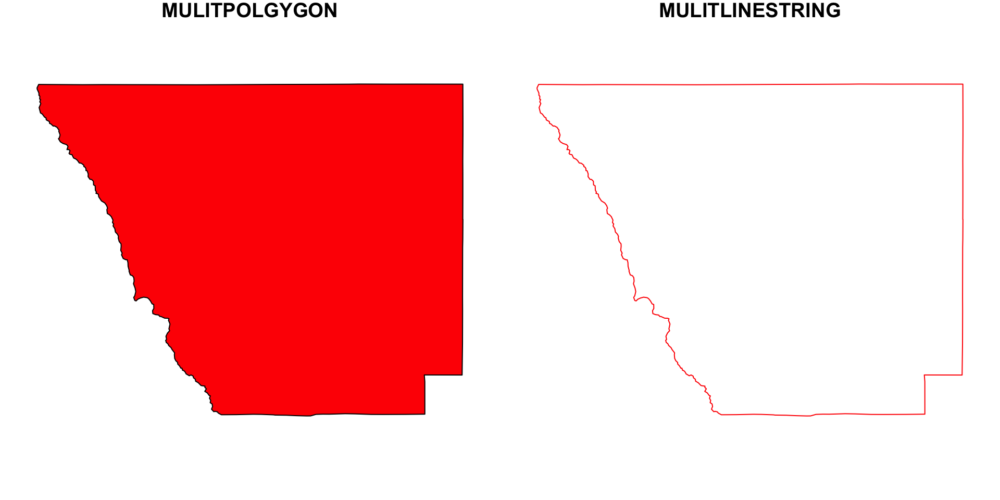
Conversion between types
It is often convenient to analyze the the points that make up a LINESTRING However …
rbind(c(0,0), c(1,1), c(1,0), c(0,1)) |>
st_linestring() |>
st_cast("POINT")
#> Warning in st_cast.LINESTRING(st_linestring(rbind(c(0, 0), c(1, 1), c(1, :
#> point from first coordinate only
#> POINT (0 0). . .
does not do what we expect, because it will convert a single geometry into a new single geometry (one line to one point)
. . .
Instead, we must recognize that a collection of points is what defines a LINSETRING and a collection of POINTs, operating as a single unit, is a MULTIPOINT
rbind(c(0,0), c(1,1), c(1,0), c(0,1)) |>
st_linestring() |>
st_cast("MULTIPOINT")
#> MULTIPOINT ((0 0), (1 1), (1 0), (0 1)). . .
If we really wanted the individual POINT geometries, we need to work with sets:
(p <- rbind(c(0,0), c(1,1), c(1,0), c(0,1)) |>
st_linestring() |>
st_sfc() |> #<<
st_cast("POINT"))
#> Geometry set for 4 features
#> Geometry type: POINT
#> Dimension: XY
#> Bounding box: xmin: 0 ymin: 0 xmax: 1 ymax: 1
#> CRS: NA
#> POINT (0 0)
#> POINT (1 1)
#> POINT (1 0)
#> POINT (0 1)sfc: sets of geometries
sfprovides a dedicated class for handeling geometry sets, calledsfc(simple feature geometry list column).We can create such a list column with constructor function
st_sfc:
. . .
(sfc = st_sfc(st_point(c(0,1)), st_point(c(-3,2))))
#> Geometry set for 2 features
#> Geometry type: POINT
#> Dimension: XY
#> Bounding box: xmin: -3 ymin: 1 xmax: 0 ymax: 2
#> CRS: NA
#> POINT (0 1)
#> POINT (-3 2)The default report from the print method for sfc gives
- the number of features geometries
- the feature geometry type (here: POINT)
- the feature geometry dimension (here: XY)
- the bounding box for the set
- the coordinate reference system for the set (epsg and proj4string)
- the first few geometries, as (abbreviated) WKT
. . .
The class of the geometry list-column is a combination of a specific class, and a superclass.
class(sfc)
#> [1] "sfc_POINT" "sfc"In addition to a class, the sfc object has further attributes (remember S3 class!)
attributes(sfc) |> names()
#> [1] "class" "precision" "bbox" "crs" "n_empty"which are used to record for the whole set:
- a precision value
- the bounding box enclosing all geometries (for x and y)
- a coordinate reference system
- the number of empty geometries contained in the set
This means that all these properties are defined for the set (sfc), and not for geometries (sfg) individually.
sfc objects are lists with each entry being an sfg object:
p[[2]]
#> POINT (1 1)and we will use these lists as list columns in data.frame or tibble objects to represent simple features with geometries in a list column.
Sets of geometries arise when we separate compound geometries:
rbind(c(0,0), c(1,1), c(1,0), c(0,1))#> [,1] [,2]
#> [1,] 0 0
#> [2,] 1 1
#> [3,] 1 0
#> [4,] 0 1Sets of geometries arise when we separate compound geometries:
rbind(c(0,0), c(1,1), c(1,0), c(0,1)) |>
st_linestring()#> LINESTRING (0 0, 1 1, 1 0, 0 1)Sets of geometries arise when we separate compound geometries:
rbind(c(0,0), c(1,1), c(1,0), c(0,1)) |>
st_linestring() |>
st_sfc()#> Geometry set for 1 feature
#> Geometry type: LINESTRING
#> Dimension: XY
#> Bounding box: xmin: 0 ymin: 0 xmax: 1 ymax: 1
#> CRS: NA
#> LINESTRING (0 0, 1 1, 1 0, 0 1)Sets of geometries arise when we separate compound geometries:
rbind(c(0,0), c(1,1), c(1,0), c(0,1)) |>
st_linestring() |>
st_sfc() |>
st_cast("POINT")#> Geometry set for 4 features
#> Geometry type: POINT
#> Dimension: XY
#> Bounding box: xmin: 0 ymin: 0 xmax: 1 ymax: 1
#> CRS: NA
#> POINT (0 0)
#> POINT (1 1)
#> POINT (1 0)
#> POINT (0 1)Sets of geometries arise when we separate compound geometries:
rbind(c(0,0), c(1,1), c(1,0), c(0,1)) |>
st_linestring() |>
st_sfc() |>
st_cast("POINT") ->
pOn the last slide,
st_sfccreates a set of oneLINESTRING(p), with a size of 4.Going the other way around (from set to feature), we need to combine geometries:
. . .
p
#> Geometry set for 4 features
#> Geometry type: POINT
#> Dimension: XY
#> Bounding box: xmin: 0 ymin: 0 xmax: 1 ymax: 1
#> CRS: NA
#> POINT (0 0)
#> POINT (1 1)
#> POINT (1 0)
#> POINT (0 1)st_combine(p)
#> Geometry set for 1 feature
#> Geometry type: MULTIPOINT
#> Dimension: XY
#> Bounding box: xmin: 0 ymin: 0 xmax: 1 ymax: 1
#> CRS: NA
#> MULTIPOINT ((0 0), (1 1), (1 0), (0 1))Casting must be done the level of the feature
If we want to go from the 4 feature (p) object to a 1 feature LINESTRING, we must combine before casting …
st_combine(p) |>
st_cast("LINESTRING")
#> Geometry set for 1 feature
#> Geometry type: LINESTRING
#> Dimension: XY
#> Bounding box: xmin: 0 ymin: 0 xmax: 1 ymax: 1
#> CRS: NA
#> LINESTRING (0 0, 1 1, 1 0, 0 1)Disolving Geometries
Combining geometries preserves their interior boundaries, unioning resolves/dissolves the internal boundaries:
(co_geom = co$geometry)
#> Geometry set for 64 features
#> Geometry type: MULTIPOLYGON
#> Dimension: XY
#> Bounding box: xmin: -109.0602 ymin: 36.99246 xmax: -102.0415 ymax: 41.00342
#> Geodetic CRS: WGS 84
#> First 5 geometries:
#> MULTIPOLYGON (((-105.0532 39.79106, -104.976 39...
#> MULTIPOLYGON (((-105.4855 37.5779, -105.4859 37...
#> MULTIPOLYGON (((-103.7065 39.73989, -103.7239 3...
#> MULTIPOLYGON (((-107.1287 37.42294, -107.2803 3...
#> MULTIPOLYGON (((-102.0416 37.64428, -102.0558 3...plot(co_geom)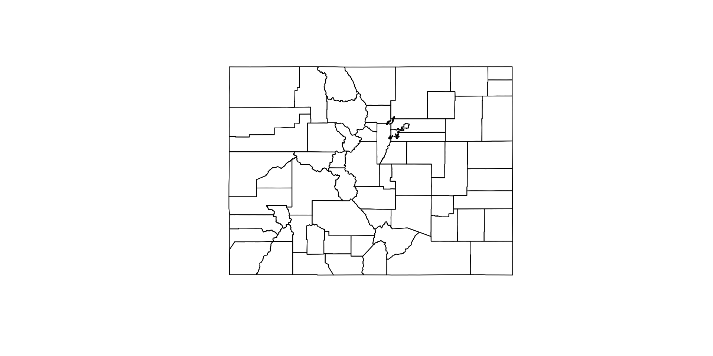
(co_c = st_combine(co_geom))
#> Geometry set for 1 feature
#> Geometry type: MULTIPOLYGON
#> Dimension: XY
#> Bounding box: xmin: -109.0602 ymin: 36.99246 xmax: -102.0415 ymax: 41.00342
#> Geodetic CRS: WGS 84
#> MULTIPOLYGON (((-105.0532 39.79106, -104.976 39...
(co_u = st_union(co_geom))
#> Geometry set for 1 feature
#> Geometry type: POLYGON
#> Dimension: XY
#> Bounding box: xmin: -109.0602 ymin: 36.99246 xmax: -102.0415 ymax: 41.00342
#> Geodetic CRS: WGS 84
#> POLYGON ((-105.155 36.99526, -105.1208 36.99543...
(co_c_ml = st_combine(co_geom) |>
st_cast("MULTILINESTRING"))
#> Geometry set for 1 feature
#> Geometry type: MULTILINESTRING
#> Dimension: XY
#> Bounding box: xmin: -109.0602 ymin: 36.99246 xmax: -102.0415 ymax: 41.00342
#> Geodetic CRS: WGS 84
#> MULTILINESTRING ((-105.0532 39.79106, -104.976 ...
(co_u_ml = st_union(co_geom) |>
st_cast("MULTILINESTRING"))
#> Geometry set for 1 feature
#> Geometry type: MULTILINESTRING
#> Dimension: XY
#> Bounding box: xmin: -109.0602 ymin: 36.99246 xmax: -102.0415 ymax: 41.00342
#> Geodetic CRS: WGS 84
#> MULTILINESTRING ((-105.155 36.99526, -105.1208 ...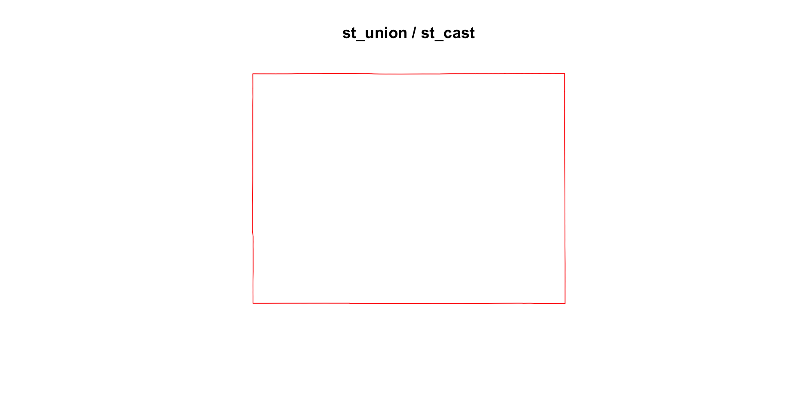
1 feature: resoloved and combined:
st_cast/st_unionwork onsfg,sfc, andsfobjects:
conus <- AOI::aoi_get(state = "conus")
us_c_ml = st_combine(conus) |>
st_cast("MULTILINESTRING")
us_u_ml = st_union(conus) |>
st_cast("MULTILINESTRING")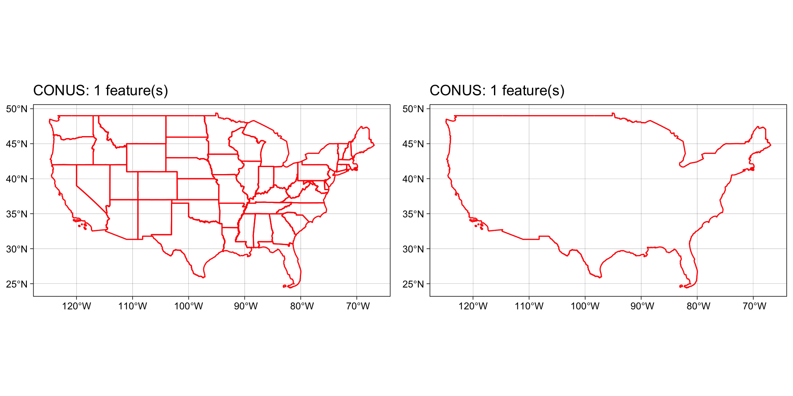
So what?
Lets imagine we want to know the distance from Denver to the nearest state border:
To do this, we need to:
1: define Denver as a geometry in a CRS
2: determine the correct geometry types / representation
3: calculate the distance between (1) and (2)
1. Make “Denver” in the CRS of our states
denver_sf <- data.frame(y = 39.7392,
x = -104.9903,
name = "Denver") |>
st_as_sf(coords = c("x", "y"),
crs = 4326)2. Determine the 3 closest states:
conus#> Simple feature collection with 49 features and 14 fields
#> Geometry type: MULTIPOLYGON
#> Dimension: XY
#> Bounding box: xmin: -124.8485 ymin: 24.39631 xmax: -66.88544 ymax: 49.38448
#> Geodetic CRS: WGS 84
#> First 10 features:
#> state_region state_division feature_code state_name state_abbr
#> 1 3 6 1779775 Alabama AL
#> 2 4 8 1779777 Arizona AZ
#> 3 3 7 0068085 Arkansas AR
#> 4 4 9 1779778 California CA
#> 5 4 8 1779779 Colorado CO
#> 6 1 1 1779780 Connecticut CT
#> 7 3 5 1779781 Delaware DE
#> 8 3 5 1702382 District of Columbia DC
#> 9 3 5 0294478 Florida FL
#> 10 3 5 1705317 Georgia GA
#> name fip_class tiger_class combined_area_code
#> 1 Alabama <NA> G4000 NA
#> 2 Arizona <NA> G4000 NA
#> 3 Arkansas <NA> G4000 NA
#> 4 California <NA> G4000 NA
#> 5 Colorado <NA> G4000 NA
#> 6 Connecticut <NA> G4000 NA
#> 7 Delaware <NA> G4000 NA
#> 8 District of Columbia <NA> G4000 NA
#> 9 Florida <NA> G4000 NA
#> 10 Georgia <NA> G4000 NA
#> metropolitan_area_code functional_status land_area water_area fip_code
#> 1 <NA> A 131175477769 4591897964 01
#> 2 <NA> A 294363973043 855871553 04
#> 3 <NA> A 134660767709 3121950081 05
#> 4 <NA> A 403671756816 20293573058 06
#> 5 <NA> A 268418796417 1185716938 08
#> 6 <NA> A 12541690473 1816424193 09
#> 7 <NA> A 5046731559 1399179670 10
#> 8 <NA> A 158316124 18709762 11
#> 9 <NA> A 138961722096 45972570361 12
#> 10 <NA> A 149486624386 4418360134 13
#> geometry
#> 1 MULTIPOLYGON (((-85.4883 30...
#> 2 MULTIPOLYGON (((-110.7507 3...
#> 3 MULTIPOLYGON (((-90.95577 3...
#> 4 MULTIPOLYGON (((-116.1062 3...
#> 5 MULTIPOLYGON (((-105.155 36...
#> 6 MULTIPOLYGON (((-72.5279 41...
#> 7 MULTIPOLYGON (((-75.13846 3...
#> 8 MULTIPOLYGON (((-77.00244 3...
#> 9 MULTIPOLYGON (((-83.10874 2...
#> 10 MULTIPOLYGON (((-81.09538 3...2. Determine the 3 closest states:
conus |>
select(state_name)#> Simple feature collection with 49 features and 1 field
#> Geometry type: MULTIPOLYGON
#> Dimension: XY
#> Bounding box: xmin: -124.8485 ymin: 24.39631 xmax: -66.88544 ymax: 49.38448
#> Geodetic CRS: WGS 84
#> First 10 features:
#> state_name geometry
#> 1 Alabama MULTIPOLYGON (((-85.4883 30...
#> 2 Arizona MULTIPOLYGON (((-110.7507 3...
#> 3 Arkansas MULTIPOLYGON (((-90.95577 3...
#> 4 California MULTIPOLYGON (((-116.1062 3...
#> 5 Colorado MULTIPOLYGON (((-105.155 36...
#> 6 Connecticut MULTIPOLYGON (((-72.5279 41...
#> 7 Delaware MULTIPOLYGON (((-75.13846 3...
#> 8 District of Columbia MULTIPOLYGON (((-77.00244 3...
#> 9 Florida MULTIPOLYGON (((-83.10874 2...
#> 10 Georgia MULTIPOLYGON (((-81.09538 3...2. Determine the 3 closest states:
conus |>
select(state_name) %>%
mutate(dist = st_distance(., denver_sf))#> Simple feature collection with 49 features and 2 fields
#> Geometry type: MULTIPOLYGON
#> Dimension: XY
#> Bounding box: xmin: -124.8485 ymin: 24.39631 xmax: -66.88544 ymax: 49.38448
#> Geodetic CRS: WGS 84
#> First 10 features:
#> state_name geometry dist
#> 1 Alabama MULTIPOLYGON (((-85.4883 30... 1571007.9 [m]
#> 2 Arizona MULTIPOLYGON (((-110.7507 3... 466602.9 [m]
#> 3 Arkansas MULTIPOLYGON (((-90.95577 3... 975519.6 [m]
#> 4 California MULTIPOLYGON (((-116.1062 3... 1000950.5 [m]
#> 5 Colorado MULTIPOLYGON (((-105.155 36... 0.0 [m]
#> 6 Connecticut MULTIPOLYGON (((-72.5279 41... 2636635.7 [m]
#> 7 Delaware MULTIPOLYGON (((-75.13846 3... 2485997.1 [m]
#> 8 District of Columbia MULTIPOLYGON (((-77.00244 3... 2388920.9 [m]
#> 9 Florida MULTIPOLYGON (((-83.10874 2... 1847447.4 [m]
#> 10 Georgia MULTIPOLYGON (((-81.09538 3... 1788781.6 [m]2. Determine the 3 closest states:
conus |>
select(state_name) %>%
mutate(dist = st_distance(., denver_sf)) |>
slice_min(dist, n = 3)#> Simple feature collection with 3 features and 2 fields
#> Geometry type: MULTIPOLYGON
#> Dimension: XY
#> Bounding box: xmin: -111.0546 ymin: 36.99246 xmax: -95.30829 ymax: 45.00582
#> Geodetic CRS: WGS 84
#> state_name dist geometry
#> 1 Colorado 0.0 [m] MULTIPOLYGON (((-105.155 36...
#> 2 Wyoming 140002.6 [m] MULTIPOLYGON (((-106.3212 4...
#> 3 Nebraska 161243.2 [m] MULTIPOLYGON (((-95.93779 4...- That’s close, but the distance to Colorado is 0, that’s not a state border.
Geometry Selection
Polygon(therefore MULTIPOLGYGONS) describe areas!- The distance to a
pointin apolygonto that polygon is 0.
To determine distance to border we need a linear representation:
conus#> Simple feature collection with 49 features and 14 fields
#> Geometry type: MULTIPOLYGON
#> Dimension: XY
#> Bounding box: xmin: -124.8485 ymin: 24.39631 xmax: -66.88544 ymax: 49.38448
#> Geodetic CRS: WGS 84
#> First 10 features:
#> state_region state_division feature_code state_name state_abbr
#> 1 3 6 1779775 Alabama AL
#> 2 4 8 1779777 Arizona AZ
#> 3 3 7 0068085 Arkansas AR
#> 4 4 9 1779778 California CA
#> 5 4 8 1779779 Colorado CO
#> 6 1 1 1779780 Connecticut CT
#> 7 3 5 1779781 Delaware DE
#> 8 3 5 1702382 District of Columbia DC
#> 9 3 5 0294478 Florida FL
#> 10 3 5 1705317 Georgia GA
#> name fip_class tiger_class combined_area_code
#> 1 Alabama <NA> G4000 NA
#> 2 Arizona <NA> G4000 NA
#> 3 Arkansas <NA> G4000 NA
#> 4 California <NA> G4000 NA
#> 5 Colorado <NA> G4000 NA
#> 6 Connecticut <NA> G4000 NA
#> 7 Delaware <NA> G4000 NA
#> 8 District of Columbia <NA> G4000 NA
#> 9 Florida <NA> G4000 NA
#> 10 Georgia <NA> G4000 NA
#> metropolitan_area_code functional_status land_area water_area fip_code
#> 1 <NA> A 131175477769 4591897964 01
#> 2 <NA> A 294363973043 855871553 04
#> 3 <NA> A 134660767709 3121950081 05
#> 4 <NA> A 403671756816 20293573058 06
#> 5 <NA> A 268418796417 1185716938 08
#> 6 <NA> A 12541690473 1816424193 09
#> 7 <NA> A 5046731559 1399179670 10
#> 8 <NA> A 158316124 18709762 11
#> 9 <NA> A 138961722096 45972570361 12
#> 10 <NA> A 149486624386 4418360134 13
#> geometry
#> 1 MULTIPOLYGON (((-85.4883 30...
#> 2 MULTIPOLYGON (((-110.7507 3...
#> 3 MULTIPOLYGON (((-90.95577 3...
#> 4 MULTIPOLYGON (((-116.1062 3...
#> 5 MULTIPOLYGON (((-105.155 36...
#> 6 MULTIPOLYGON (((-72.5279 41...
#> 7 MULTIPOLYGON (((-75.13846 3...
#> 8 MULTIPOLYGON (((-77.00244 3...
#> 9 MULTIPOLYGON (((-83.10874 2...
#> 10 MULTIPOLYGON (((-81.09538 3...To determine distance to border we need a linear representation:
conus |>
select(state_name)#> Simple feature collection with 49 features and 1 field
#> Geometry type: MULTIPOLYGON
#> Dimension: XY
#> Bounding box: xmin: -124.8485 ymin: 24.39631 xmax: -66.88544 ymax: 49.38448
#> Geodetic CRS: WGS 84
#> First 10 features:
#> state_name geometry
#> 1 Alabama MULTIPOLYGON (((-85.4883 30...
#> 2 Arizona MULTIPOLYGON (((-110.7507 3...
#> 3 Arkansas MULTIPOLYGON (((-90.95577 3...
#> 4 California MULTIPOLYGON (((-116.1062 3...
#> 5 Colorado MULTIPOLYGON (((-105.155 36...
#> 6 Connecticut MULTIPOLYGON (((-72.5279 41...
#> 7 Delaware MULTIPOLYGON (((-75.13846 3...
#> 8 District of Columbia MULTIPOLYGON (((-77.00244 3...
#> 9 Florida MULTIPOLYGON (((-83.10874 2...
#> 10 Georgia MULTIPOLYGON (((-81.09538 3...To determine distance to border we need a linear representation:
conus |>
select(state_name) |>
st_cast("MULTILINESTRING")#> Simple feature collection with 49 features and 1 field
#> Geometry type: MULTILINESTRING
#> Dimension: XY
#> Bounding box: xmin: -124.8485 ymin: 24.39631 xmax: -66.88544 ymax: 49.38448
#> Geodetic CRS: WGS 84
#> First 10 features:
#> state_name geometry
#> 1 Alabama MULTILINESTRING ((-85.4883 ...
#> 2 Arizona MULTILINESTRING ((-110.7507...
#> 3 Arkansas MULTILINESTRING ((-90.95577...
#> 4 California MULTILINESTRING ((-116.1062...
#> 5 Colorado MULTILINESTRING ((-105.155 ...
#> 6 Connecticut MULTILINESTRING ((-72.5279 ...
#> 7 Delaware MULTILINESTRING ((-75.13846...
#> 8 District of Columbia MULTILINESTRING ((-77.00244...
#> 9 Florida MULTILINESTRING ((-83.10874...
#> 10 Georgia MULTILINESTRING ((-81.09538...To determine distance to border we need a linear representation:
conus |>
select(state_name) |>
st_cast("MULTILINESTRING") %>%
mutate(dist = st_distance(., denver_sf))#> Simple feature collection with 49 features and 2 fields
#> Geometry type: MULTILINESTRING
#> Dimension: XY
#> Bounding box: xmin: -124.8485 ymin: 24.39631 xmax: -66.88544 ymax: 49.38448
#> Geodetic CRS: WGS 84
#> First 10 features:
#> state_name geometry dist
#> 1 Alabama MULTILINESTRING ((-85.4883 ... 1571007.9 [m]
#> 2 Arizona MULTILINESTRING ((-110.7507... 466602.9 [m]
#> 3 Arkansas MULTILINESTRING ((-90.95577... 975519.6 [m]
#> 4 California MULTILINESTRING ((-116.1062... 1000950.5 [m]
#> 5 Colorado MULTILINESTRING ((-105.155 ... 140002.6 [m]
#> 6 Connecticut MULTILINESTRING ((-72.5279 ... 2636635.7 [m]
#> 7 Delaware MULTILINESTRING ((-75.13846... 2485997.1 [m]
#> 8 District of Columbia MULTILINESTRING ((-77.00244... 2388920.9 [m]
#> 9 Florida MULTILINESTRING ((-83.10874... 1847447.4 [m]
#> 10 Georgia MULTILINESTRING ((-81.09538... 1788781.6 [m]To determine distance to border we need a linear representation:
conus |>
select(state_name) |>
st_cast("MULTILINESTRING") %>%
mutate(dist = st_distance(., denver_sf)) |>
slice_min(dist, n = 3)#> Simple feature collection with 3 features and 2 fields
#> Geometry type: MULTILINESTRING
#> Dimension: XY
#> Bounding box: xmin: -111.0546 ymin: 36.99246 xmax: -95.30829 ymax: 45.00582
#> Geodetic CRS: WGS 84
#> state_name dist geometry
#> 1 Colorado 140002.6 [m] MULTILINESTRING ((-105.155 ...
#> 2 Wyoming 140002.6 [m] MULTILINESTRING ((-106.3212...
#> 3 Nebraska 161243.2 [m] MULTILINESTRING ((-95.93779...Good. However, we were only interested in the distance to the closest border not to ALL boarders. Therefore we calculated 48 (49 - 1) more distances then needed!
While this is not to complex for 1 <-> 49 features imagine we had 28,000+ (like your lab)!
That would result in 1,344,000 more calculations then needed …
Revisting the idea of the feature level:
A “feature” can “be part of the whole” or the whole
A island (POLYGON), or a set of islands acting as 1 unit (MULTIPOLYGON)
A city (POINT), or a set of cities meeting a condition (MULTIPOINT)
A road (LINESTRING), or a route (MULTILINESTRING)
Since we want the distance to the nearest border, regardless of the state. Our feature is the set of borders with preserved boundaries.
In other words, a 1 feature
MULTILINESTRING
. . .
st_distance(denver_sf, st_cast(st_combine(conus), "MULTILINESTRING"))
#> Units: [m]
#> [,1]
#> [1,] 140002.6- The same principle would apply if the question was “distance to national border”
sf: objects with simple features
Simple features geometries and feature attributes are put together in sf (simple feature) objects.
co
#> Simple feature collection with 64 features and 4 fields
#> Geometry type: MULTIPOLYGON
#> Dimension: XY
#> Bounding box: xmin: -109.0602 ymin: 36.99246 xmax: -102.0415 ymax: 41.00342
#> Geodetic CRS: WGS 84
#> First 10 features:
#> geoid name aland state_nm geometry
#> 1 08001 Adams 3021840487 Colorado MULTIPOLYGON (((-105.0532 3...
#> 2 08003 Alamosa 1871643028 Colorado MULTIPOLYGON (((-105.4855 3...
#> 3 08005 Arapahoe 2066438714 Colorado MULTIPOLYGON (((-103.7065 3...
#> 4 08007 Archuleta 3496712164 Colorado MULTIPOLYGON (((-107.1287 3...
#> 5 08009 Baca 6617400567 Colorado MULTIPOLYGON (((-102.0416 3...
#> 6 08011 Bent 3918255148 Colorado MULTIPOLYGON (((-102.7476 3...
#> 7 08013 Boulder 1881325109 Colorado MULTIPOLYGON (((-105.3978 3...
#> 8 08014 Broomfield 85386685 Colorado MULTIPOLYGON (((-105.1092 3...
#> 9 08015 Chaffee 2624715692 Colorado MULTIPOLYGON (((-105.9698 3...
#> 10 08017 Cheyenne 4605713960 Colorado MULTIPOLYGON (((-103.1729 3...This sf object is of class
class(co)
#> [1] "sf" "data.frame"meaning it extends data.frame, but with a single list-column with geometries, which is held in the column named:
attr(co, "sf_column")
#> [1] "geometry"The stickness of sfc column
- Geometry columns are “sticky” meaning they persist through data manipulation:
. . .
co |>
select(name) |>
slice(1:2)
#> Simple feature collection with 2 features and 1 field
#> Geometry type: MULTIPOLYGON
#> Dimension: XY
#> Bounding box: xmin: -106.0393 ymin: 37.3562 xmax: -103.7057 ymax: 40.00137
#> Geodetic CRS: WGS 84
#> name geometry
#> 1 Adams MULTIPOLYGON (((-105.0532 3...
#> 2 Alamosa MULTIPOLYGON (((-105.4855 3...- Dropping the geometry column requires dropping the geometry via
sf:
. . .
co |>
st_drop_geometry() |> #<<
select(name) |>
slice(1:2)
#> name
#> 1 Adams
#> 2 Alamosa- Or cohersing the
sfobject to adata.frame:
. . .
co |>
as.data.frame() |> #<<
select(name) |>
slice(1:2)
#> name
#> 1 Adams
#> 2 AlamosaThe stickness of sfc column
- A simple features object (sf) is the connection of a
sfclist-column anddata.frameof attributes

- This binding is unique compared to other column bindings built with things like
dplyr::bind_cols()cbind()do.call(cbind, list())
Coordinate Systems
What makes spatial data spatial?
- What makes a feature geometry spatial is the reference system…
Coordinate Systems
Coordinate Reference Systems (CRS) defines how spatial features relate to the surface of the Earth.
CRSs are either geographic or projected…
CRSs are measurement units for coordinates:
sf tools
In sf we have three tools for exploring, define, and changing CRS systems:
st_crs : Retrieve coordinate reference system from sf or sfc object
st_set_crs : Set or replace coordinate reference system from object
st_transform : Transform or convert coordinates of simple feature
Again, “st” (like PostGIS) denotes it is an operation that can work on a ” s patial t ype”
Geographic Coordinate Systms (GCS)
A GCS identifies locations on the curved surface of the earth.
Locations are measured in angular units from the center of the earth relative to the plane defined by the equator and the plane defined by the prime meridian.
The vertical angle describes the latitude and the horizontal angle the longitude
In most coordinate systems, the North-South and East-West directions are encoded as +/-.
North and East are positive (
+) and South and West are negative (-) sign.A GCS is defined by 3 components:
an ellipsoid
a geoid
a datum
Sphere and Ellipsoid
Assuming that the earth is a perfect sphere simplifies calculations and works for small-scale maps (maps that show a large area of the earth).
But … the earth is not a sphere do to its rotation inducing a centripetal force along the equator.
This results in an equatorial axis that is roughly 21 km longer than the polar axis.
To account for this, the earth is modeled as an ellipsoid (slighty squished sphere) defined by two radii:
- the semi-major axis (along the equatorial radius)
- the semi-minor axis (along the polar radius)

Thanks to satellite and computational capabilities our estimates of these radii are be quite precise
The semi-major axis is 6,378,137 m
The semi-minor axis is 6,356,752 m
Differences in distance along the surfaces of an ellipsoid vs. a perfect sphere are small but measurable (the difference can be as high as 20 km)

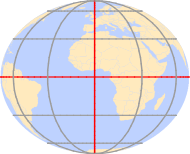
Geoid
The ellipsoid gives us the earths form as a perfectly smooth object
But … the earth is not perfectly smooth
Deviations from the perfect sphere are measurable and can influence measurements.
A geoid is a mathematical model fore representing these deviations
We are not talking about mountains and ocean trenches but the earth’s gravitational potential which is tied to the flow of the earth’s hot and fluid core.
Therefore the geoid is constantly changing, albeit a large temporal scale.
The measurement and representation of the earth’s shape is at the heart of
geodesy

Datum
So how are we to reconcile our need to work with a (simple) mathematical model of the earth’s shape with the undulating nature of the geoid?
We align the geoid with the ellipsoid to map the the earths departures from the smooth assumption
The alignment can be local where the ellipsoid surface is closely fit to the geoid at a particular location on the earth’s surface
or
geocentric where the ellipsoid is aligned with the center of the earth.
The alignment of the smooth ellipsoid to the geoid model defines a datum.
Local Datums
There are many local datums to choose from
The choice of datum is largely driven by the location
When working in the USA, a the North American Datum of 1927 (or NAD27 for short) is standard
- NAD27 is not well suited for other parts of the world.
Examples of common local datums are shown in the following table:
| Local datum | Acronym | Best for | Comment |
|---|---|---|---|
| North American Datum of 1927 | NAD27 | Continental US | This is an old datum but still prevalent |
| European Datum of 1950 | ED50 | Western Europe | Developed after World War II and still quite popular |
| World Geodetic System 1972 | WGS72 | Global | Developed by the Department of Defense. |
Geocentric Datum
Many modern datums use a geocentric alignment
World Geodetic Survey for 1984 (WGS84)
North American Datums of 1983 (NAD83)
Most popular geocentric datums use the WGS84 ellipsoid or the GRS80 ellipsoid which share nearly identical semi-major and semi-minor axes
| Geocentric datum | Acronym | Best for | Comment |
|---|---|---|---|
| North American Datum of 1983 | NAD83 | Continental US | This is one of the most popular modern datums for the contiguous US. |
| European Terrestrial Reference System 1989 | ETRS89 | Western Europe | This is the most popular modern datum for much of Europe. |
| World Geodetic System 1984 | WGS84 | Global | Developed by the Department of Defense. |
Note
NAD 27 is based on Clarke Ellipsoid of 1866 which is calculated by manual surveying. NAD83 is based on the Geodetic Reference System (GRS) of 1980.
Building a GCS
So, a GCS is defined by the ellipsoid model and its alignment to the geoid defining the datum.
Smooth Sphere - Mathmatical Geoid (in angular units)
Projected Coordinate Systems
The surface of the earth is curved but maps (and to data GIS) is flat.
A projected coordinate system (PCS) is a reference system for identifying locations and measuring features on a flat (2D) surfaces. I
Projected coordinate systems have an origin, an x axis, a y axis, and a linear unit of measure.
Going from a GCS to a PCS requires mathematical transformations.
There are three main groups of projection types:
- conic
- cylindrical
- planar
Projection Types:
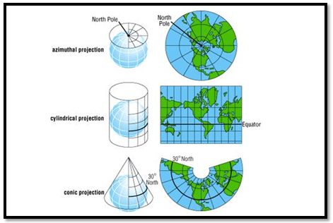
In all cases, distortion is minimized at the line/point of tangency (denoted by black line/point)
Distortions are minimized along the tangency lines and increase with the distance from those lines.
Plannar
A planar projection projects data onto a flat surface touching the globe at a point or along 1 line of tangency.
Typically used to map polar regions.
Cylindrical
A cylindrical projection maps the surface onto a cylinder.
This projection could also be created by touching the Earth’s surface along 1 or 2 lines of tangency
Most often when mapping the entire world.
Conic
In a conic projection, the Earth’s surface is projected onto a cone along 1 or 2 lines of tangency
Therefore, it is the best suited for maps of mid-latitude areas.
Spatial Properties
All projections distort real-world geographic features.
Think about trying to unpeel an orange while preserving the skin
The four spatial properties that are subject to distortion are: shape, area, distance and direction
A map that preserves shape is called
conformal;one that preserves area is called
equal-area;one that preserves distance is called
equidistantone that preserves direction is called
azimuthalEach map projection can preserve only one or two of the four spatial properties.
Often, projections are named after the spatial properties they preserve.
When working with small-scale (large area) maps and when multiple spatial properties are needed, it is best to break the analyses across projections to minimize errors associated with spatial distortion.
Setting CRSs/PCSs
- We saw that
sfcobjects have two attributes to store a CRS:epsgandproj4string
. . .
st_geometry(conus)
#> Geometry set for 49 features
#> Geometry type: MULTIPOLYGON
#> Dimension: XY
#> Bounding box: xmin: -124.8485 ymin: 24.39631 xmax: -66.88544 ymax: 49.38448
#> Geodetic CRS: WGS 84
#> First 5 geometries:
#> MULTIPOLYGON (((-85.4883 30.99706, -85.36962 30...
#> MULTIPOLYGON (((-110.7507 37.00301, -110.8054 3...
#> MULTIPOLYGON (((-90.95577 34.11871, -90.9569 34...
#> MULTIPOLYGON (((-116.1062 32.61848, -116.0123 3...
#> MULTIPOLYGON (((-105.155 36.99526, -105.1208 36...This implies that all geometries in a geometry list-column (sfc) must have the same CRS.
proj4stringis a generic, string-based description of a CRS, understood by PROJIt defines projection types and parameter values for particular projections,
As a result it can cover an infinite amount of different projections.
epsgis the integer ID for a known CRS that can be resolved into aproj4string.- This is somewhat equivalent to the idea that a 6-digit FIP code can be resolved to a state/county pair
Some
proj4stringvalues can resolved back into their correspondingepsgID, but this does not always work.The importance of having
epsgvalues stored with data besidesproj4stringvalues is that theepsgrefers to particular, well-known CRS, whose parameters may change (improve) over timefixing only the
proj4stringmay remove the possibility to benefit from such improvements, and limit some of the provenance of datasets (but may help reproducibility)
PROJ4 coordinate syntax
The PROJ4 syntax contains a list of parameters, each prefixed with the + character.
A list of some PROJ4 parameters follows and the full list can be found here:
| Parameter | Description |
|---|---|
| +a | Semi-major radius of the ellipsoid axis |
| +b | Semi-minor radius of the ellipsoid axis |
| +datum | Datum name |
| +ellps | Ellipsoid name |
| +lat_0 | Latitude of origin |
| +lat_1 | Latitude of first standard parallel |
| +lat_2 | Latitude of second standard parallel |
| +lat_ts | Latitude of true scale |
| +lon_0 | Central meridian |
| +over | Allow longitude output outside -180 to 180 range, disables wrapping |
| +proj | Projection name |
| +south | Denotes southern hemisphere UTM zone |
| +units | meters, US survey feet, etc. |
| +x_0 | False easting |
| +y_0 | False northing |
| +zone | UTM zone |
Transform and retrive
st_crs(conus)$epsg
#> [1] 4326
st_crs(conus)$proj4string
#> [1] "+proj=longlat +datum=WGS84 +no_defs"
st_crs(conus)$datum
#> [1] "WGS84"conus5070 <- st_transform(conus, 5070)
st_crs(conus5070)$epsg
#> [1] 5070
st_crs(conus5070)$proj4string
#> [1] "+proj=aea +lat_0=23 +lon_0=-96 +lat_1=29.5 +lat_2=45.5 +x_0=0 +y_0=0 +datum=NAD83 +units=m +no_defs"
st_crs(conus5070)$datum
#> [1] "NAD83"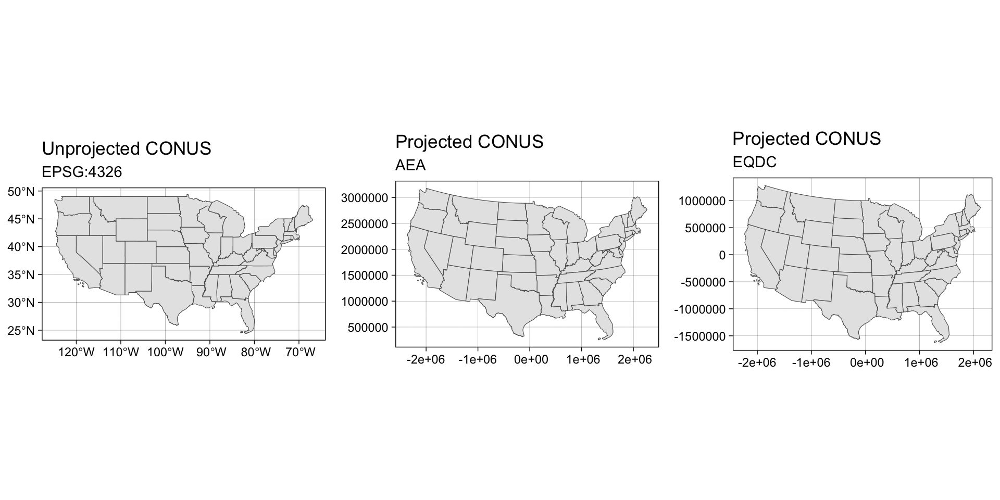
Revisit Denver
echo -104.9903 39.7392 | proj +proj=eqdc +lat_0=40 +lon_0=-96 +lat_1=20 +lat_2=60 +x_0=0 +y_0=0 +datum=NAD83 +units=m +no_defs
#> -723281.88 6827.29- red = false origin : blue = Denver
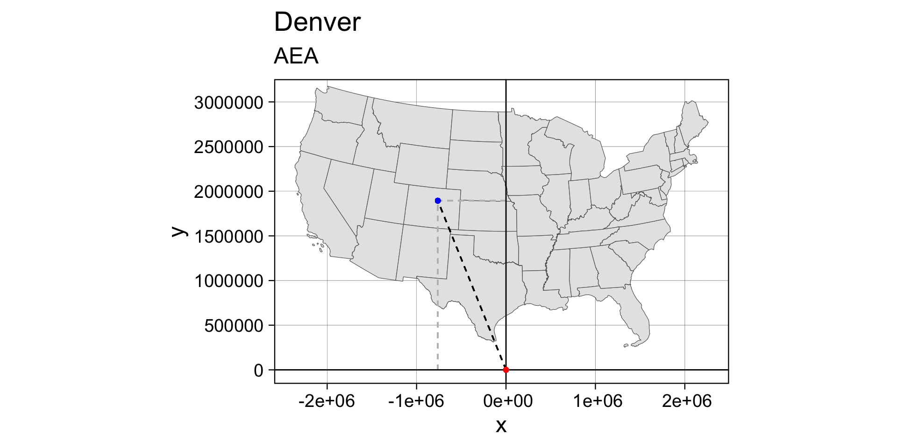
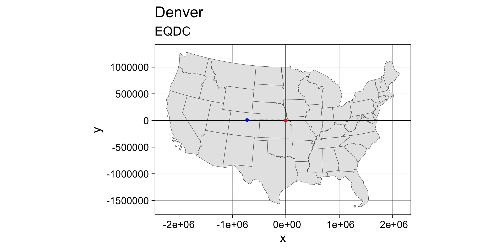
Geodesic geometries
PCSs introduce errors in their geometric measurements because the distance between two points on an ellipsoid is difficult to replicate on a projected coordinate system unless these points are close to one another.
In most cases, such errors other sources of error in the feature representation outweigh measurement errors made in a PCS making them tolorable.
However, if the domain of analysis is large (i.e. the North American continent), then the measurement errors associated with a projected coordinate system may no longer be acceptable.
A way to circumvent projected coordinate system limitations is to adopt a geodesic solution.
Geodesic Measurments
A geodesic distance is the shortest distance between two points on an ellipsoid
A geodesic area measurement is one that is measured on an ellipsoid.
Such measurements are independent of the underlying projected coordinate system.
Why does this matter?
Compare the distances measured between Santa Barbara and Amsterdam. The blue line represents the shortest distance between the two points on a planar coordinate system. The red line as measured on a ellipsoid.
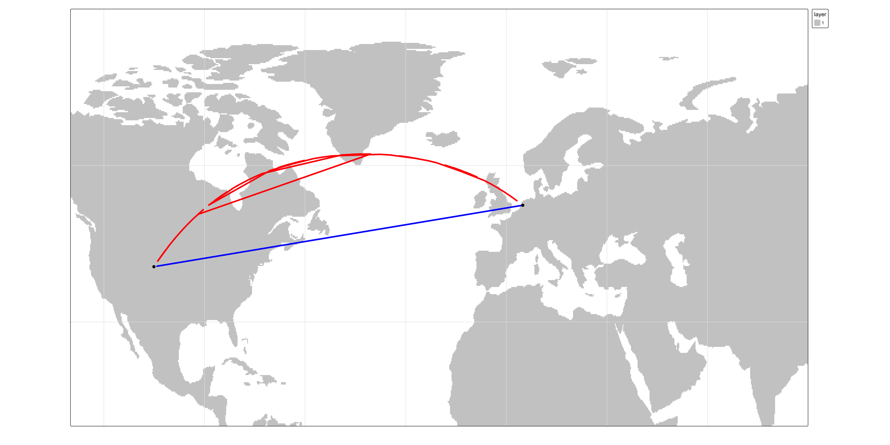
the geodesic distance looks weird given its curved appearance on the projected map.
this curvature is a byproduct of the current reference system’s increasing distance distortion as one moves towards the pole!
We can display the geodesic and planar distance on a 3D globe (or a projection that mimics the view of the 3D earth).
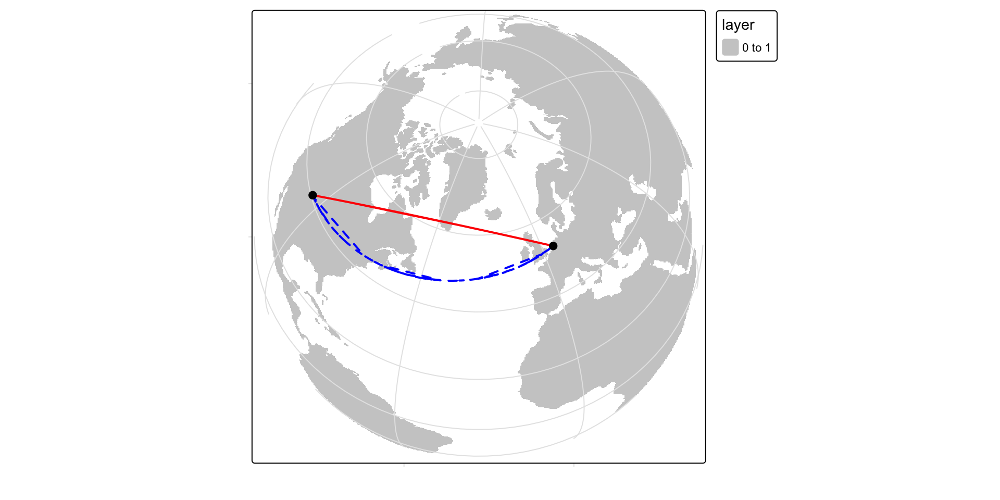
So if a geodesic measurement is more precise than a planar measurement, why not perform all spatial operations using geodesic geometry?
The downside is in its computational requirements.
It’s far more efficient to compute area/distance on a plane than it is on a spheroid.
This is because geodesic calculations have no simple algebraic solutions and involve approximations that may require iteration! (think optimization or nonlinear solutions)
So this may be a computationally taxing approach if processing 1,000(s) or 1,000,000(s) of line segments.
Gedesic Area and Length Measurements
Not all algorthimns are equal (in terms of speed or accuracy)
Some more efficient algorithms that minimize computation time may reduce precision in the process.
Some of ArcMap’s functions offer the option to compute geodesic distances and areas however ArcMap does not clearly indicate how its geodesic calculations are implemented (cite)
R is well documented, and is efficient!
Distances
?st_distance

native sf binds to libwgeom


Distance Example
(pts = data.frame(y = c(40.7128, 34.4208),
x = c(-74.0060, -119.6982 ),
name = c("NYC","SB")))#> y x name
#> 1 40.7128 -74.0060 NYC
#> 2 34.4208 -119.6982 SBDistance Example
(pts = data.frame(y = c(40.7128, 34.4208),
x = c(-74.0060, -119.6982 ),
name = c("NYC","SB")))
(pts = st_as_sf(pts, coords = c("x", "y"),
crs = 4326))#> y x name
#> 1 40.7128 -74.0060 NYC
#> 2 34.4208 -119.6982 SB
#> Simple feature collection with 2 features and 1 field
#> Geometry type: POINT
#> Dimension: XY
#> Bounding box: xmin: -119.6982 ymin: 34.4208 xmax: -74.006 ymax: 40.7128
#> Geodetic CRS: WGS 84
#> name geometry
#> 1 NYC POINT (-74.006 40.7128)
#> 2 SB POINT (-119.6982 34.4208)Distance Example
(pts = data.frame(y = c(40.7128, 34.4208),
x = c(-74.0060, -119.6982 ),
name = c("NYC","SB")))
(pts = st_as_sf(pts, coords = c("x", "y"),
crs = 4326))
eqds = '+proj=eqdc +lat_0=40 +lon_0=-96 +lat_1=20 +lat_2=60 +x_0=0 +y_0=0 +datum=NAD83 +units=m +no_defs'#> y x name
#> 1 40.7128 -74.0060 NYC
#> 2 34.4208 -119.6982 SB
#> Simple feature collection with 2 features and 1 field
#> Geometry type: POINT
#> Dimension: XY
#> Bounding box: xmin: -119.6982 ymin: 34.4208 xmax: -74.006 ymax: 40.7128
#> Geodetic CRS: WGS 84
#> name geometry
#> 1 NYC POINT (-74.006 40.7128)
#> 2 SB POINT (-119.6982 34.4208)Distance Example
(pts = data.frame(y = c(40.7128, 34.4208),
x = c(-74.0060, -119.6982 ),
name = c("NYC","SB")))
(pts = st_as_sf(pts, coords = c("x", "y"),
crs = 4326))
eqds = '+proj=eqdc +lat_0=40 +lon_0=-96 +lat_1=20 +lat_2=60 +x_0=0 +y_0=0 +datum=NAD83 +units=m +no_defs'
# Greeat Circle Distance
st_distance(pts)#> y x name
#> 1 40.7128 -74.0060 NYC
#> 2 34.4208 -119.6982 SB
#> Simple feature collection with 2 features and 1 field
#> Geometry type: POINT
#> Dimension: XY
#> Bounding box: xmin: -119.6982 ymin: 34.4208 xmax: -74.006 ymax: 40.7128
#> Geodetic CRS: WGS 84
#> name geometry
#> 1 NYC POINT (-74.006 40.7128)
#> 2 SB POINT (-119.6982 34.4208)
#> Units: [m]
#> [,1] [,2]
#> [1,] 0 4050406
#> [2,] 4050406 0Distance Example
(pts = data.frame(y = c(40.7128, 34.4208),
x = c(-74.0060, -119.6982 ),
name = c("NYC","SB")))
(pts = st_as_sf(pts, coords = c("x", "y"),
crs = 4326))
eqds = '+proj=eqdc +lat_0=40 +lon_0=-96 +lat_1=20 +lat_2=60 +x_0=0 +y_0=0 +datum=NAD83 +units=m +no_defs'
# Greeat Circle Distance
st_distance(pts)
# Euclidean Distance
st_distance(pts, which = "Euclidean")#> y x name
#> 1 40.7128 -74.0060 NYC
#> 2 34.4208 -119.6982 SB
#> Simple feature collection with 2 features and 1 field
#> Geometry type: POINT
#> Dimension: XY
#> Bounding box: xmin: -119.6982 ymin: 34.4208 xmax: -74.006 ymax: 40.7128
#> Geodetic CRS: WGS 84
#> name geometry
#> 1 NYC POINT (-74.006 40.7128)
#> 2 SB POINT (-119.6982 34.4208)
#> Units: [m]
#> [,1] [,2]
#> [1,] 0 4050406
#> [2,] 4050406 0
#> Units: [°]
#> 1 2
#> 1 0.00000 46.12338
#> 2 46.12338 0.00000Distance Example
(pts = data.frame(y = c(40.7128, 34.4208),
x = c(-74.0060, -119.6982 ),
name = c("NYC","SB")))
(pts = st_as_sf(pts, coords = c("x", "y"),
crs = 4326))
eqds = '+proj=eqdc +lat_0=40 +lon_0=-96 +lat_1=20 +lat_2=60 +x_0=0 +y_0=0 +datum=NAD83 +units=m +no_defs'
# Greeat Circle Distance
st_distance(pts)
# Euclidean Distance
st_distance(pts, which = "Euclidean")
# Equal Area PCS
st_distance(st_transform(pts, 5070))#> y x name
#> 1 40.7128 -74.0060 NYC
#> 2 34.4208 -119.6982 SB
#> Simple feature collection with 2 features and 1 field
#> Geometry type: POINT
#> Dimension: XY
#> Bounding box: xmin: -119.6982 ymin: 34.4208 xmax: -74.006 ymax: 40.7128
#> Geodetic CRS: WGS 84
#> name geometry
#> 1 NYC POINT (-74.006 40.7128)
#> 2 SB POINT (-119.6982 34.4208)
#> Units: [m]
#> [,1] [,2]
#> [1,] 0 4050406
#> [2,] 4050406 0
#> Units: [°]
#> 1 2
#> 1 0.00000 46.12338
#> 2 46.12338 0.00000
#> Units: [m]
#> 1 2
#> 1 0 4017987
#> 2 4017987 0Distance Example
(pts = data.frame(y = c(40.7128, 34.4208),
x = c(-74.0060, -119.6982 ),
name = c("NYC","SB")))
(pts = st_as_sf(pts, coords = c("x", "y"),
crs = 4326))
eqds = '+proj=eqdc +lat_0=40 +lon_0=-96 +lat_1=20 +lat_2=60 +x_0=0 +y_0=0 +datum=NAD83 +units=m +no_defs'
# Greeat Circle Distance
st_distance(pts)
# Euclidean Distance
st_distance(pts, which = "Euclidean")
# Equal Area PCS
st_distance(st_transform(pts, 5070))
# Equal Distance
st_distance(st_transform(pts, eqds))#> y x name
#> 1 40.7128 -74.0060 NYC
#> 2 34.4208 -119.6982 SB
#> Simple feature collection with 2 features and 1 field
#> Geometry type: POINT
#> Dimension: XY
#> Bounding box: xmin: -119.6982 ymin: 34.4208 xmax: -74.006 ymax: 40.7128
#> Geodetic CRS: WGS 84
#> name geometry
#> 1 NYC POINT (-74.006 40.7128)
#> 2 SB POINT (-119.6982 34.4208)
#> Units: [m]
#> [,1] [,2]
#> [1,] 0 4050406
#> [2,] 4050406 0
#> Units: [°]
#> 1 2
#> 1 0.00000 46.12338
#> 2 46.12338 0.00000
#> Units: [m]
#> 1 2
#> 1 0 4017987
#> 2 4017987 0
#> Units: [m]
#> 1 2
#> 1 0 3823549
#> 2 3823549 0Distance Example
(pts = data.frame(y = c(40.7128, 34.4208),
x = c(-74.0060, -119.6982 ),
name = c("NYC","SB")))
(pts = st_as_sf(pts, coords = c("x", "y"),
crs = 4326))
eqds = '+proj=eqdc +lat_0=40 +lon_0=-96 +lat_1=20 +lat_2=60 +x_0=0 +y_0=0 +datum=NAD83 +units=m +no_defs'
# Greeat Circle Distance
st_distance(pts)
# Euclidean Distance
st_distance(pts, which = "Euclidean")
# Equal Area PCS
st_distance(st_transform(pts, 5070))
# Equal Distance
st_distance(st_transform(pts, eqds))#> y x name
#> 1 40.7128 -74.0060 NYC
#> 2 34.4208 -119.6982 SB
#> Simple feature collection with 2 features and 1 field
#> Geometry type: POINT
#> Dimension: XY
#> Bounding box: xmin: -119.6982 ymin: 34.4208 xmax: -74.006 ymax: 40.7128
#> Geodetic CRS: WGS 84
#> name geometry
#> 1 NYC POINT (-74.006 40.7128)
#> 2 SB POINT (-119.6982 34.4208)
#> Units: [m]
#> [,1] [,2]
#> [1,] 0 4050406
#> [2,] 4050406 0
#> Units: [°]
#> 1 2
#> 1 0.00000 46.12338
#> 2 46.12338 0.00000
#> Units: [m]
#> 1 2
#> 1 0 4017987
#> 2 4017987 0
#> Units: [m]
#> 1 2
#> 1 0 3823549
#> 2 3823549 0Area Example: CONUS
us_u_mp = st_cast(us_u_ml, "MULTIPOLYGON")Area Example: CONUS
us_u_mp = st_cast(us_u_ml, "MULTIPOLYGON")
df = data.frame(name = c("WGS84", "AEA", "EPDS"),
area = c(sum(st_area(conus)),
sum(st_area(st_transform(conus, 5070))),
sum(st_area(st_transform(conus, eqds)))))Area Example: CONUS
us_u_mp = st_cast(us_u_ml, "MULTIPOLYGON")
df = data.frame(name = c("WGS84", "AEA", "EPDS"),
area = c(sum(st_area(conus)),
sum(st_area(st_transform(conus, 5070))),
sum(st_area(st_transform(conus, eqds)))))
ggplot(df)
Area Example: CONUS
us_u_mp = st_cast(us_u_ml, "MULTIPOLYGON")
df = data.frame(name = c("WGS84", "AEA", "EPDS"),
area = c(sum(st_area(conus)),
sum(st_area(st_transform(conus, 5070))),
sum(st_area(st_transform(conus, eqds)))))
ggplot(df) +
geom_col(aes(x = name, y = as.numeric(area) ))
Area Example: CONUS
us_u_mp = st_cast(us_u_ml, "MULTIPOLYGON")
df = data.frame(name = c("WGS84", "AEA", "EPDS"),
area = c(sum(st_area(conus)),
sum(st_area(st_transform(conus, 5070))),
sum(st_area(st_transform(conus, eqds)))))
ggplot(df) +
geom_col(aes(x = name, y = as.numeric(area) )) +
theme_linedraw()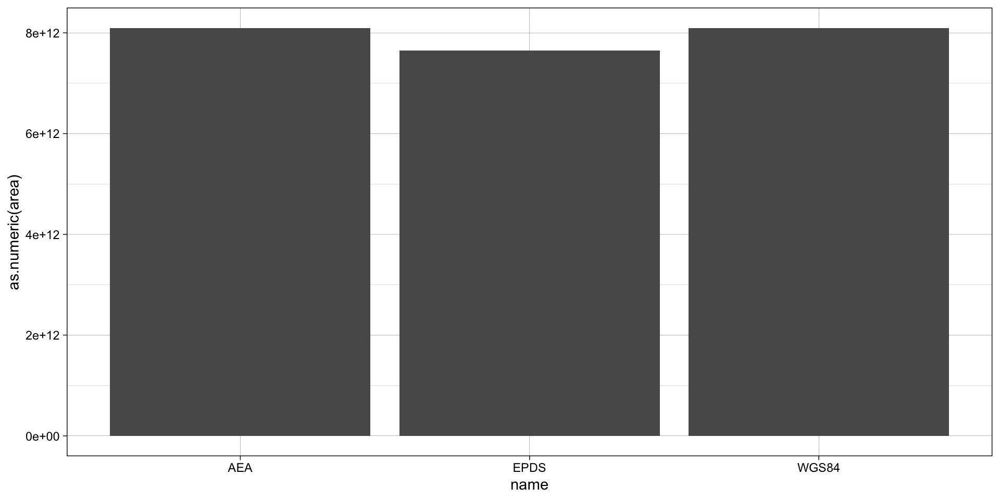
Area Example: CONUS
us_u_mp = st_cast(us_u_ml, "MULTIPOLYGON")
df = data.frame(name = c("WGS84", "AEA", "EPDS"),
area = c(sum(st_area(conus)),
sum(st_area(st_transform(conus, 5070))),
sum(st_area(st_transform(conus, eqds)))))
ggplot(df) +
geom_col(aes(x = name, y = as.numeric(area) )) +
theme_linedraw() +
labs(x = "SRS", y = "m2")
Units in sf
The CRS in
sfencodes the units of measurement relating to spatial featuresWhere possible geometric operations such as
st_distance(),st_length()andst_area()report results with a units attribute appropriate for the CRS:This can be both handy and very confusing for those new to it. Consider the following:
(l = sum(st_length(conus)))
#> 100093081 [m]
(a = sum(st_area(conus)))
#> 8.096497e+12 [m^2]We can set units if we do manipulations as well using the units package
units::set_units(l, "km")
#> 100093.1 [km]
units::set_units(l, "mile")
#> 62194.96 [mile]
units::set_units(a, "ha")
#> 809649680 [ha]
units::set_units(a, "km2")
#> 8096497 [km^2]
units::set_units(a, "in2")
#> 1.25496e+16 [in^2]Units are a class
- units are an S3 data object with attribute information and “rules of engagement”
class(st_length(conus))
#> [1] "units"
attributes(st_length(conus)) |> unlist()
#> units.numerator class
#> "m" "units"
st_length(conus) + 100
#> Error in Ops.units(st_length(conus), 100): both operands of the expression should be "units" objects
conus |>
mutate(area = st_area(.)) |>
ggplot(aes(x = name, y = area)) +
geom_col()
#> Error in `stopifnot()`:
#> ℹ In argument: `area = st_area(.)`.
#> Caused by error:
#> ! object '.' not foundUnit values can be stripped of their attributes if need be:
# Via drop_units
(units::drop_units(sum(st_length(conus))))
#> [1] 100093081
# Via casting
(as.numeric(sum(st_length(conus))))
#> [1] 100093081